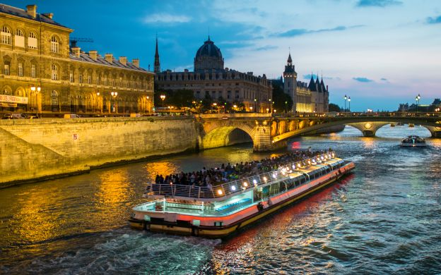

Seine
1. Présentation générale
La Seine (prononcé [ˈsɛn]) est un fleuve français, long de 774,76 kilomètres, qui coule
dans le Bassin parisien et arrose notamment Troyes, Paris, Rouen et Le Havre. Sa source se situe à 446 m
d'altitude à Source-Seine, en Côte-d'Or, sur le plateau de Langres. Son cours a une orientation
générale du sud-est au nord-ouest. La Seine se jette dans la Manche entre Le Havre et Honfleur. Son
bassin versant, d'une superficie de 79 000 km2, englobe près de 30 % de la population du pays.

2. Conception
La Seine est partagée en cinq parties, d'amont en aval18 : la Petite Seine, de la source à Montereau-Fault-Yonne (confluent avec l'Yonne) ; la Haute Seine, de Montereau-Fault-Yonne à Paris ; la traversée de Paris ; la Basse Seine, de Paris à Rouen ;
